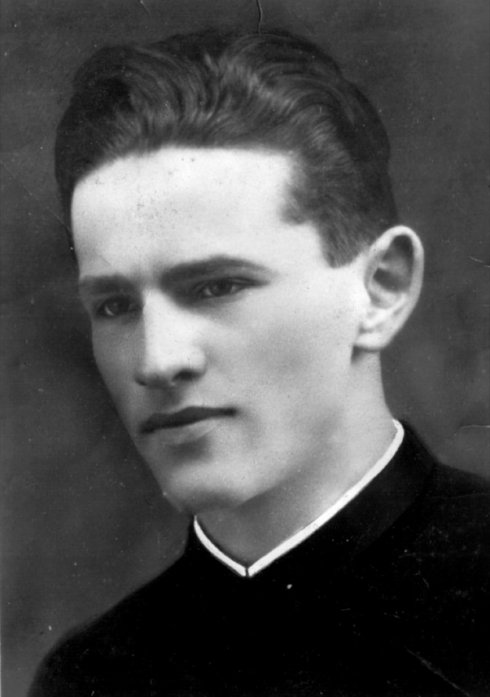

Časni sluge Božji
Novak
Časni sluga Božji Stjepan Kaszap
1916. – 1935.
Mađarski isusovački novak iz Székesfehérvára, izvrstan gimnastičar i izviđač, u Družbu Isusovu stupio je 1934. godine. Tešku bolest, koja ga je odnijela s devetnaest godina, podnosio je strpljivo i s mirnom vjerom.
Tekst je sažet i prilagođen uz pomoć umjetne inteligencije.

Izvor slike
- Spomendan
- 17. prosinca
- Zaštitništvo
- Nije navedeno u izvoru
- Životni vijek
- 1916. – 1935.
- Djelovanje
- Mladi i odgoj · Duhovno vodstvo i razlučivanje · Bolest i osobne kušnje
- Razdoblje
- 20. stoljeće
- Crkveni naslov
- Časni sluga Božji
- Rođenje
- 25. ožujka 1916., Székesfehérvár, Mađarska
- Država rođenja
- Mađarska
- Datum smrti
- 17.12.1935.
- Mjesto smrti/mučeništva
- Budimpešta, Mađarska
- Uloga
- Novak
- Mučenik
- Ne
- Ostale oznake
- Časni sluga Božji – nema liturgijskog spomendana; u direktoriju naveden na dan smrti.
- Pripadnost
- Isusovac
- Razlike u izvorima
- Mjesto smrti u podatcima zbirke: Budimpešta. Mađarski izvori i cistercitska opatija u Dallasu navode bolnicu u Székesfehérváru i noć 16. prosinca 1935. Razlika izvora nije razriješena.
- Drugi oblici imena
- István Kaszap · István
- Priznanje herojskih kreposti
- 16. prosinca 2006., Benedikt XVI.
- Počivalište
- Kripta uz Prohászkinu spomen-crkvu (crkva Dobroga Pastira), Székesfehérvár
U kalendaru zbirke naveden je dan smrti.
Životopis
Stjepan Kaszap rođen je 25. ožujka 1916. u Székesfehérváru. Odrastao je u pobožnoj obitelji poštanskoga službenika, s dvojicom starije braće i dvjema mlađim sestrama. Kao dječak bio je tvrdoglav i sklon izljevima ljutnje, što je poslije i sam otvoreno priznavao. Osam godina pohađao je cistercitsku gimnaziju sv. Stjepana u rodnome gradu i završio je s odličnim uspjehom.
U školi se priključio novoosnovanoj izviđačkoj četi, u kojoj je s vremenom preuzeo vođenje ophodnje. Na ljetnim logorima znao je ustati prije drugih kako bi molio na rubu šume. Gimnastikom se ozbiljnije počeo baviti tek u starijim razredima, ali je brzo postao jedan od najboljih u svojemu kraju: skupio je niz medalja, a u ožujku 1934. pobijedio je na natjecanju zapadne Mađarske.
Pred kraj gimnazije, nakon duhovnih vježbi i čitanja djela biskupa Ottokára Prohászke, odlučio je postati isusovac, iako se majka pribojavala siromašnoga redovničkog života. Krajem srpnja 1934. započeo je novicijat u budimskoj kući Manréza. Ondje je strpljivo radio na vlastitoj naravi, učeći poslušnost i svakodnevnu vjernost malim dužnostima.
Već uoči Božića 1934. pojavile su se prve tegobe: otekline i bolovi u zglobovima, groznica i upala krajnika. Liječnici dugo nisu mogli otkriti uzrok, a u studenome 1935. ustanovljen je erizipel. Zbog bolesti je morao napustiti novicijat. Nakon odstranjivanja krajnika i zahvata na grkljanu ostao je bez glasa, pa se s bližnjima sporazumijevao kratkim pisanim porukama. Bolest je prihvaćao kao križ koji valja nositi spremno i radosno. Umro je 17. prosinca 1935., tri mjeseca prije dvadesetoga rođendana. Roditeljima je ostavio poruku da ne plaču, jer mu je to rođendan u nebu.
Život i nasljeđe
Glas o mladome novaku brzo se proširio izvan obitelji i škole. Vjernici su dolazili na njegov grob, a mjesni biskup dopustio je javno iskazivanje štovanja na tom mjestu. Mnogi mladi, osobito izviđači i sportaši, prepoznali su u njemu vršnjaka koji je vjeru živio u sasvim običnim okolnostima: u razredu, na treningu i na logoru.
Biskupijski postupak za proglašenje blaženim otvoren je u Székesfehérváru 11. listopada 1941., ali ga je prekinuo rat; spisi su 1946. poslani u Rim. Papa Benedikt XVI. odobrio je 16. prosinca 2006. proglašenje dekreta o njegovim herojskim krepostima, čime je dobio naslov časnoga sluge Božjega. Biskupija Székesfehérvár u novije je vrijeme ponovno pokrenula rad na kauzi, a za beatifikaciju je potrebno priznanje čuda po njegovu zagovoru.
Isprva je pokopan na groblju Sóstó u Székesfehérváru. Posmrtni ostaci kasnije su preneseni u kriptu uz Prohászkinu spomen-crkvu, poznatu i kao crkva Dobroga Pastira, gdje mu je grob smješten pod arkadama crkvenoga dvorišta. O stotoj obljetnici rođenja grob je uvršten u Nemzeti Sírkert, mađarski nacionalni popis zaštićenih grobova znamenitih osoba.
Tekst je sažet i prilagođen uz pomoć umjetne inteligencije.
Pročitaj više na izvornoj stranici ↗